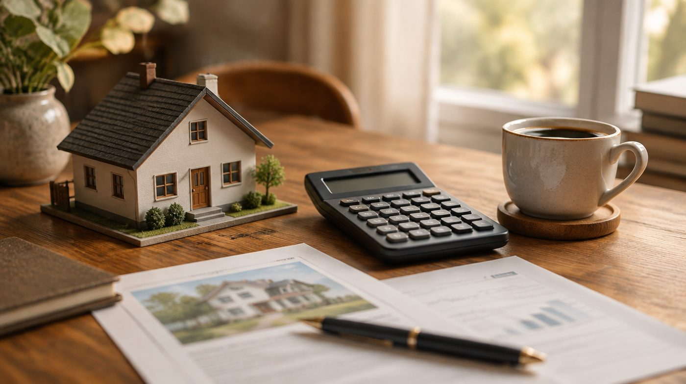

Kurz zusammengefasst
- Häuser kosten in Bannewitz 2026 im Schnitt etwa 3.100–3.250 €/m², Eigentumswohnungen rund 2.400–2.600 €/m² – jeweils mit sehr breiter Spanne.
- Die Preise sind nach der Zinsdelle wieder stabil bis leicht steigend; Bannewitz liegt über dem Niveau vieler Nachbarorte.
- Diese Zahlen sind Durchschnitts- und Angebotspreise aus Portalen – den tatsächlichen Wert Ihrer Immobilie zeigt nur eine Bewertung vor Ort.
Inhaltsverzeichnis
- Was Immobilien in Bannewitz 2026 kosten
- Wie sich die Preise entwickelt haben
- Mieten und Renditen im Blick
- Warum „ein Preis für Bannewitz" trügt
- Angebotspreis ist nicht Verkaufspreis
- Warum nur eine Bewertung vor Ort stimmt
- Grundstücke und Bodenrichtwert
- 10 Tipps für Ihren Verkauf
- Mein Fazit für Bannewitz
„Frau Kreiser, was ist mein Haus eigentlich wert?" – das ist die Frage, die ich hier in Bannewitz am häufigsten höre. Verständlich: Wer verkaufen, erben oder kaufen will, möchte eine Zahl. Und ein schneller Blick ins Internet liefert sie auch sofort. Nur leider selten die richtige. Ich zeige Ihnen in diesem Beitrag, was die aktuellen Marktdaten für Bannewitz hergeben – und, mindestens genauso wichtig, wo ihre Grenzen liegen.
Denn so viel vorweg: Eine ehrliche Preiseinschätzung besteht nicht aus einem Durchschnittswert, den man mit der Quadratmeterzahl multipliziert. Dazu später mehr.
Was Immobilien in Bannewitz 2026 kosten
Fangen wir mit den harten Zahlen an. Ich habe für Sie mehrere große Immobilienportale verglichen – Stand Herbst 2026. Die Werte weichen je nach Methode und Stichtag voneinander ab, ergeben aber zusammen ein klares Bild:
| Objektart | Ø Preis (€/m²) | typische Spanne (€/m²) |
|---|---|---|
| Eigentumswohnung | ca. 2.400 – 2.600 | ca. 1.800 – 3.500 |
| Haus | ca. 3.100 – 3.250 | ca. 1.250 – 5.100 |
Konkret: immowelt nennt für Wohnungen rund 2.486 €/m² (Stand April 2026) und für Häuser etwa 3.111 €/m². Der Preisatlas von Homeday kommt für das dritte Quartal 2026 sogar auf etwa 2.600 €/m² bei Wohnungen und 3.200 €/m² bei Häusern. Andere Portale liegen bei Wohnungen eher bei 2.350–2.500 €/m². Für Häuser bewegen sich die Durchschnitte fast aller Quellen zwischen 2.900 und 3.250 €/m².
Was sofort auffällt: Die Spanne ist riesig. Bei Häusern reicht sie laut immowelt von rund 1.244 bis über 5.000 €/m². Das ist der Faktor vier zwischen dem günstigsten und dem teuersten Objekt – im selben Ort. Genau hier beginnt die Geschichte, die ein Durchschnittswert niemals erzählt.
Wie sich die Preise entwickelt haben
Viele Eigentümer:innen in Bannewitz, Possendorf und Goppeln fragen mich, ob der Zug abgefahren sei – ob die hohen Zinsen den Markt dauerhaft abgewürgt hätten. Die Antwort ist ein klares Nein.
Nach der Delle 2023/2024, als steigende Zinsen viele Kaufinteressenten ausgebremst haben, zeigen die Preise wieder nach oben. Die Quartalsdaten von Homeday sprechen eine deutliche Sprache: Seit Mitte 2024 sind die Hauspreise in Bannewitz um rund 14 Prozent gestiegen (von etwa 2.800 auf 3.200 €/m²), Wohnungen sogar um knapp ein Viertel. Immowelt weist für Wohnungen ein Plus von gut vier Prozent gegenüber dem Vorjahr aus.
Das heißt nicht, dass es schnurgerade nach oben geht. Zwischendurch gab es auch kleine Rücksetzer von ein bis zwei Prozent. Aber der Grundton ist klar: stabil, mit leichtem Aufwärtstrend – ohne Überhitzung. Die Nähe zu Dresden bei gleichzeitig ruhigem, grünem Umland hält die Nachfrage hoch. Wie stark Zinsen und Markt zusammenspielen, habe ich im Beitrag Fallen die Immobilienpreise? ausführlicher beleuchtet.
Mieten und Renditen im Blick
Für Kapitalanleger:innen zählt neben dem Kaufpreis vor allem eines: die Miete. Auch hier lohnt der nüchterne Blick. Die durchschnittliche Kaltmiete in Bannewitz liegt 2026 bei etwa 9,70 €/m² – und ist damit gegenüber dem Vorjahr um rund sieben Prozent gestiegen. Kleine Wohnungen unter 40 m² erzielen mit knapp 10 €/m² anteilig mehr, große über 90 m² liegen bei gut 10 €/m², die breite Mitte von 40 bis 90 m² bei rund 9,50 €/m².
Ob sich eine vermietete Immobilie für Sie rechnet, hängt dann vom Zusammenspiel aus Kaufpreis, Miete, Nebenkosten und Finanzierung ab. Wenn Sie das einmal selbst durchspielen möchten, nutzen Sie gern meinen Investrechner – er zeigt Ihnen Rendite, Kaufpreisfaktor und den monatlichen Cashflow auf einen Blick. Für Bannewitz gilt dabei die Faustregel: solide, nicht spektakulär, dafür mit stabiler Nachfrage.
Warum „ein Preis für Bannewitz" trügt
Bannewitz ist nicht gleich Bannewitz. Die Gemeinde mit Verwaltungssitz in Possendorf besteht aus etlichen Ortsteilen – Bannewitz selbst, Possendorf, Goppeln, Gaustritz, Rippien, Welschhufe, Boderitz, Cunnersdorf und weitere. Und die unterscheiden sich im Preisniveau spürbar.
Eine ruhige Hanglage mit Blick ins Grüne wird anders bewertet als eine Parzelle an einer durchfahrenen Straße. Ein saniertes Fachwerkhaus in Possendorf spielt in einer anderen Liga als ein unrenovierter Siebzigerjahre-Bau. Schon innerhalb von wenigen hundert Metern können sich die realistischen Quadratmeterpreise deutlich verschieben. Portale fassen all das zu einer einzigen Zahl zusammen – und genau diese Mittelung ist für den Einzelfall oft wertlos.
Wer ernsthaft kaufen oder verkaufen will, sollte deshalb nie fragen „Was kostet der Quadratmeter in Bannewitz?", sondern „Was ist genau dieses Objekt, in genau dieser Lage, in genau diesem Zustand wert?" Das ist eine völlig andere Frage – und sie lässt sich nicht am Schreibtisch beantworten.
Angebotspreis ist nicht Verkaufspreis
Noch ein Punkt, den die wenigsten auf dem Schirm haben: Fast alle Zahlen aus Portalen sind Angebotspreise – also das, was in den Inseraten gefordert wird. Was am Ende beim Notar tatsächlich bezahlt wurde, steht dort nicht. Und das kann spürbar auseinanderliegen.
Mal wird über dem Angebot abgeschlossen, weil zwei Parteien um dasselbe Haus ringen. Viel häufiger liegt der echte Verkaufspreis aber etwas darunter – weil nachverhandelt wurde, weil Mängel auftauchten oder weil das Objekt schlicht zu optimistisch eingepreist war. Die amtlichen Kaufpreissammlungen der Gutachterausschüsse erfassen genau diese tatsächlichen Werte, Portale nicht.
Für Sie heißt das: Ein Online-Durchschnitt ist ein Startpunkt für das Bauchgefühl – mehr nicht. Er ersetzt keine belastbare Bewertung. Und eine zu hoch angesetzte Immobilie bleibt oft monatelang liegen und verkauft sich am Ende schlechter als eine von Anfang an realistisch bepreiste.
Warum nur eine Bewertung vor Ort stimmt
Jetzt zum Kern. Warum bestehe ich so auf der persönlichen Begehung? Weil die entscheidenden wertbildenden Faktoren schlicht nicht in einer Datenbank stehen. Ein Algorithmus kennt die Postleitzahl und vielleicht das Baujahr. Er sieht aber nicht den frisch sanierten Dachstuhl, die feuchte Kellerwand, den Traumgarten nach Süden oder die hellhörige Wand zum Nachbarn.
Genau diese Details machen am Ende den Unterschied von mehreren zehntausend Euro aus. Wenn ich bei Ihnen vor Ort bin, gehe ich einen strukturierten Bewertungsbogen durch – Lage, Grundstück, Bausubstanz, Ausstattung, Zustand, Energie und die vielen kleinen Besonderheiten. So sieht so ein Bogen in der Praxis aus:
Vor-Ort-Bewertungsbogen
Wertermittlung · Einfamilienhaus, Bannewitz
Lage & Umfeld
Grundstück
Gebäude & Bausubstanz
Ausstattung & Zustand
Energie
Besonderheiten
Ergebnis · realistischer Marktwert-Korridor
ca. 445.000 – 475.000 €
Sehen Sie den Unterschied? Ein Portal würde dieses Haus über einen Durchschnittswert grob schätzen. Der Bogen dagegen fängt ein, was den Preis wirklich bewegt: das sanierte Bad, die Südausrichtung, die intakte Bausubstanz – oder eben die Mängel, die ehrlich in den Preis gehören. Erst aus dieser Summe entsteht ein belastbarer Marktwert-Korridor statt einer Zufallszahl.
Hinzu kommt die Marktkenntnis, die keine Tabelle liefert: Wie reagieren Käufer:innen hier gerade? Welche Lagen sind gefragt, welche schwieriger? Was haben vergleichbare Objekte im Umkreis zuletzt tatsächlich erzielt? Diese Einordnung ist der eigentliche Wert einer persönlichen Bewertung – und der Grund, warum ich sie jedem Online-Schätzer vorziehe.
Grundstücke und Bodenrichtwert
Besonders unübersichtlich wird es bei unbebauten Grundstücken. Die Portale widersprechen sich hier für Bannewitz massiv – die Angaben reichen von gut 100 €/m² bis über 320 €/m² für erschlossenes Bauland, je nach Quelle und Methode. Verlässlich ist das nicht.
Für belastbare Bodenwerte führt kein Weg an der amtlichen Quelle vorbei: den Bodenrichtwerten des Gutachterausschusses über das Portal BORIS.Sachsen. Dort lassen sich die Richtwertzonen – auch für Possendorf und die übrigen Ortsteile – direkt und offiziell abfragen. Aber Achtung: Ein Bodenrichtwert gilt für eine ganze Zone und für ein fiktives, unbebautes Standardgrundstück. Ihr konkretes Grundstück kann mit Zuschnitt, Hanglage oder Erschließung spürbar davon abweichen. Auch hier gilt: Der amtliche Wert ist eine gute Grundlage – die Feinarbeit passiert vor Ort.
10 Tipps für Ihren Verkauf
Wenn Sie in Bannewitz oder Umgebung verkaufen möchten, entscheidet die Vorbereitung über Preis und Tempo. Diese zehn Punkte nehme ich mit jedem Verkäufer und jeder Verkäuferin durch – sie ersparen Ihnen teure Fehler.
- Setzen Sie von Anfang an einen realistischen Preis. Ein Fantasiepreis schreckt ab, das Objekt bleibt liegen – und wird am Ende oft unter Wert verkauft. Der erste Eindruck zählt auch beim Preis.
- Lassen Sie vor Ort bewerten, nicht online schätzen. Nur eine Begehung erfasst Zustand, Lage und Ausstattung – genau die Faktoren, die über zehntausende Euro entscheiden.
- Bringen Sie Ihre Unterlagen vollständig zusammen. Grundbuchauszug, Flurkarte, Grundrisse, Wohnflächenberechnung, Nebenkosten und bei Wohnungen die Teilungserklärung. Lückenlose Unterlagen schaffen Vertrauen und beschleunigen den Verkauf.
- Besorgen Sie den Energieausweis rechtzeitig. Er ist Pflicht, und die Kennwerte müssen schon in die Anzeige. Mehr dazu im Beitrag Energieausweis beim Hausverkauf.
- Machen Sie die Immobilie verkaufsfertig. Entrümpeln, kleine Reparaturen erledigen, gründlich putzen. Ein aufgeräumtes, helles Haus verkauft sich spürbar besser als ein vollgestelltes.
- Investieren Sie in gute Fotos und ein ehrliches Exposé. Die meisten Interessent:innen entscheiden am Bildschirm, ob sie überhaupt anfragen. Professionelle Fotos bei Tageslicht sind das halbe Geschäft.
- Legen Sie Mängel offen. Wer einen feuchten Keller oder einen defekten Kessel verschweigt, haftet trotz „gekauft wie gesehen" (§ 444 BGB). Ehrlichkeit schützt Sie – Details im Beitrag Worauf beim Kaufvertrag achten.
- Wählen Sie Zielgruppe und Timing bewusst. Eine Familie sucht anders als ein Kapitalanleger. Sprechen Sie die richtige Gruppe an – und verkaufen Sie nicht unter Zeitdruck aus der Not heraus.
- Führen Sie Besichtigungen und Verhandlung souverän. Gut vorbereitet auf Fragen, ruhig im Preisgespräch – und prüfen Sie vor dem Notartermin unbedingt die Finanzierung der Käuferseite.
- Entscheiden Sie bewusst: allein oder mit Maklerin? Beides kann richtig sein. Welcher Weg zu Ihnen passt, finden Sie in wenigen Minuten mit meinem ehrlichen Selbsttest „Brauchen Sie mich als Maklerin überhaupt?" auf der Startseite heraus.
Mein Fazit für Bannewitz
Die gute Nachricht zuerst: Der Markt in Bannewitz ist gesund. Nach der Zinsdelle ziehen die Preise wieder moderat an, die Nachfrage ist stabil, und das Preisniveau liegt über dem vieler Nachbargemeinden. Wer verkaufen möchte, verkauft in einen soliden Markt hinein. Wer kaufen möchte, findet weiterhin faire Gelegenheiten – wenn er genau hinschaut.
Die wichtigere Nachricht aber ist: Lassen Sie sich von keiner einzelnen Zahl blenden. Durchschnittspreise aus dem Netz sind ein Gefühl, kein Gutachten. Ob Ihre Immobilie 10 Prozent über oder unter dem Ortsschnitt liegt, entscheiden Lage, Zustand und Ausstattung – und die sieht man erst vor Ort. Eine zu hoch angesetzte Immobilie kostet am Ende Zeit und Geld; eine zu niedrig angesetzte verschenkt bares Vermögen.
Deshalb mein ehrlicher Rat: Nehmen Sie die Zahlen aus diesem Beitrag als Orientierung – und dann lassen Sie Ihre Immobilie richtig anschauen. Wie ein realistischer Wert konkret entsteht, lesen Sie auch im Beitrag Immobilienbewertung Bannewitz. Oder wir machen es direkt gemeinsam: Ich komme zu Ihnen, gehe mit Ihnen den Bewertungsbogen durch und sage Ihnen offen, was Sache ist. Kostenlos und unverbindlich.
Quellen
immowelt – Immobilienpreise Bannewitz (Quadratmeterpreise Wohnungen & Häuser, Stand 2026): immowelt.de.
Homeday Preisatlas Bannewitz (Quartalsdaten & Preisentwicklung): homeday.de.
immobilienpreise-2026.de – Bannewitz (Durchschnitts- und Quartalswerte): immobilienpreise-2026.de.
ohne-makler.net – Mietspiegel Bannewitz (Kaltmieten nach Wohnungsgröße): ohne-makler.net.
Amtliche Bodenrichtwerte Sachsen (Gutachterausschuss): boris.sachsen.de. Stand: Oktober 2026. Alle Preisangaben sind unverbindliche Markt-Orientierungen und ersetzen keine individuelle Wertermittlung.

Über die Autorin
Janine Kreiser
Immobilienmaklerin in Bannewitz
Ich bin Bannewitzerin und begleite Eigentümer:innen in der Region ehrlich durch den Verkauf – von der realistischen Bewertung vor Ort bis zur Übergabe. Mehr über meinen Weg und meine Haltung lesen Sie über mich.
Was ist Ihre Immobilie in Bannewitz wert?
Kein Durchschnitt, keine Zufallszahl: Ich komme zu Ihnen, gehe mit Ihnen den Bewertungsbogen durch und erstelle Ihnen eine kostenlose, unverbindliche Markteinschätzung – persönlich, lokal und mit echter Marktkenntnis aus Bannewitz.
Ihre Janine Kreiser – Ihre Immobilienexpertin für Bannewitz und Umgebung.